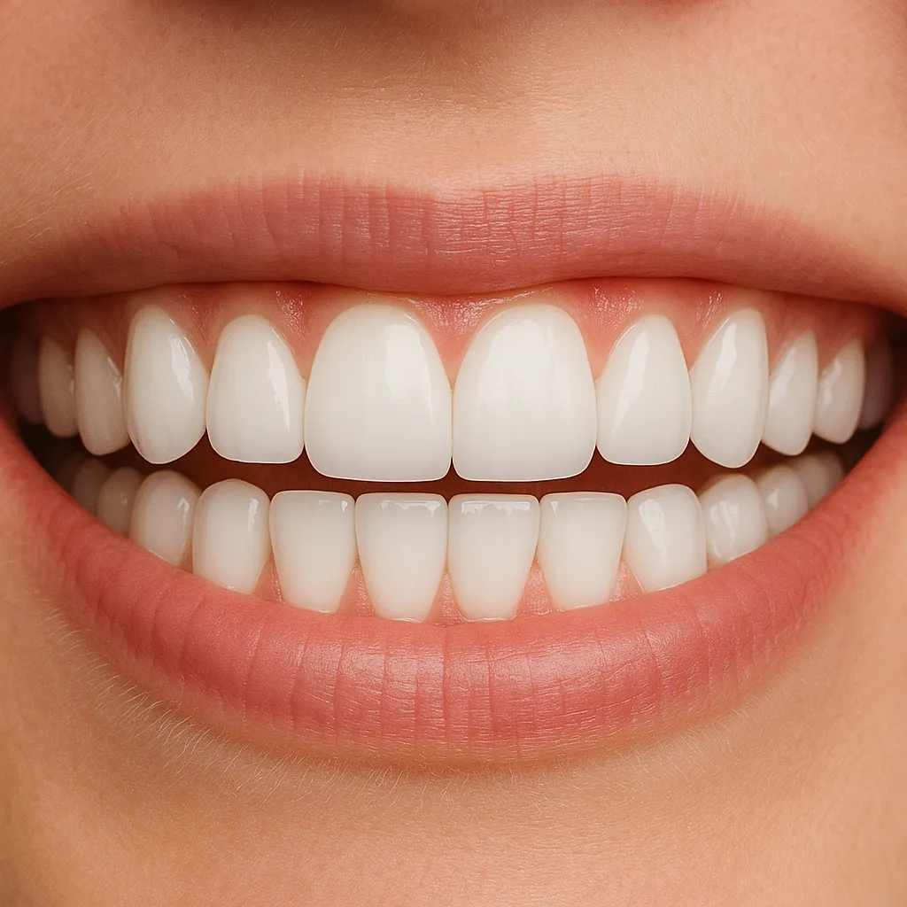
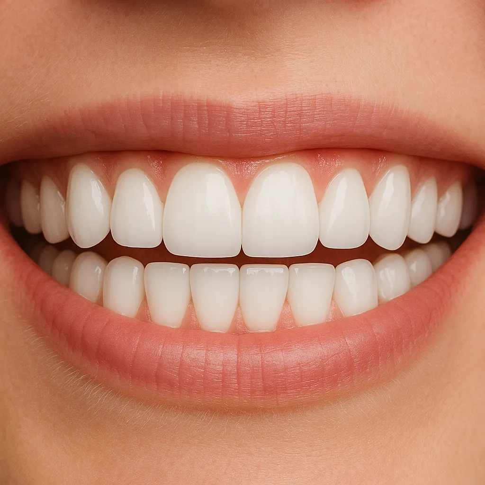

CLÍNICA ODONTOLÓGICA
Buscamos satisfacer integral y cómodamente las necesidades de nuestros pacientes, entregando una atención de la más alta calidad, funcional y estética.
Para su pronta atención, puede reservar su hora escribiéndonos a:
Equipo de especialistas para la mejor atención.
Ver másLun-Vie: 9:00 - 13:00 / 15:00 - 20:00
Sáb-Dom: Cerrado
Combinamos experiencia y tecnología para ofrecer la mejor atención dental
Atendiendo generaciones de pacientes y familias completas, hemos construido una reputación basada en la confianza y resultados de calidad.
Apostamos por la cercanía con nuestros pacientes, identificando sus requerimientos, gustos y temores para personalizar cada tratamiento.
Hemos construido una clínica con espacios amplios y confortables, diseñados para ofrecer la mejor experiencia en servicios odontológicos.
Entregar el mejor y más completo servicio odontológico del sur de Chile, gracias a que contamos con todo el espectro de especialistas en el área odontológica.
Somos un equipo que privilegia lo humano en cada atención, dedicando el tiempo necesario para que nuestros pacientes obtengan resultados que superen sus expectativas.
Queremos ser reconocidos como la Clínica Dental con la mejor experiencia de servicio odontológico en la región del Bío Bío, tanto por la calidad de nuestros profesionales, como por el trato cercano y cordial con nuestros clientes.
Ofrecemos tratamientos avanzados con profesionales altamente calificados
Corrección de la posición de los dientes
Corrección de la posición de los dientes y los huesos para una sonrisa más estética. Utilizamos técnicas avanzadas como brackets tradicionales, estéticos e Invisalign.
ConsultarTratamientos para mejorar la armonía facial
Procedimientos no quirúrgicos para mejorar la armonía facial. Incluye aplicación de toxina botulínica, ácido hialurónico y otros tratamientos rejuvenecedores.
ConsultarReemplazo de piezas dentales perdidas
Implantes dentales de titanio para reponer piezas perdidas. Ofrecemos soluciones personalizadas con tecnología de punta para devolver la funcionalidad y estética.
ConsultarAtención especializada para niños
Cuidado dental especializado para niños y adolescentes. Ofrecemos un ambiente amigable y técnicas adaptadas para hacer de la visita dental una experiencia positiva.
ConsultarTratamiento de conducto
Tratamiento del interior del diente (nervio y conductos). Utilizamos técnicas avanzadas para aliviar el dolor y salvar dientes con infecciones o daños severos.
ConsultarTratamiento de encías
Diagnóstico y tratamiento de enfermedades de las encías. Incluye limpieza profunda, cirugía de encías y procedimientos regenerativos para tejidos de soporte dental.
ConsultarProcedimientos quirúrgicos orales
Cirugía oral y maxilofacial para corregir problemas funcionales y estéticos. Incluye extracción de muelas del juicio, cirugía ortognática y reconstrucciones.
ConsultarRestauración integral de la dentadura
Restauración integral de la función y estética dental. Solucionamos casos complejos mediante prótesis fijas, removibles e implantes dentales.
ConsultarMejora la belleza de tu sonrisa
Procedimientos para mejorar la apariencia de su sonrisa. Incluye carillas, coronas, blanqueamiento y restauraciones que imitan el aspecto natural de los dientes.
ConsultarLa solución estética y cómoda para alinear tus dientes
Invisalign es un sistema de ortodoncia invisible que utiliza alineadores transparentes personalizados para corregir la posición de tus dientes. A diferencia de los brackets tradicionales, Invisalign es prácticamente invisible, cómodo y removible.
Prácticamente invisible, nadie notará que llevas un tratamiento de ortodoncia
Puedes quitártelos para comer y mantener una higiene dental óptima
Sin alambres ni brackets que puedan irritar tus mejillas y encías
Evaluamos tu caso y determinamos si eres candidato para Invisalign
Tomamos imágenes panorámicas digitales de tus dientes con tecnología avanzada
Diseñamos un plan personalizado y podrás ver una simulación del resultado final
Fabricamos tus alineadores transparentes específicos para tu caso
Controles periódicos para asegurar el progreso óptimo de tu tratamiento
Agenda una evaluación y descubre si Invisalign es para ti
Agenda AquíConozca nuestros espacios modernos diseñados para su confort y atención de calidad


Cirujano Dentista
Especialidad: Odontopediatría, Odontología Infanto-Juvenil
Cirujano Dentista
Especialidad: Endodoncia
Cirujano Dentista
Especialidad: Ortodoncia y Ortopedia Dentomaxilofacial
Cirujano Dentista
Especialidad: Rehabilitación Oral e Implantología
Cirujano Dentista
Especialidad: Rehabilitación Oral, Adhesiva y Biomimética
Cirujano Dentista
Especialidad: Odontología General
Cirujano Dentista
Especialidad: Implantólogo Rehabilitación
Cirujano Dentista
Especialidad: Rehabilitación Oral e Implantología
Cirujano Dentista
Especialidad: Rehabilitación Oral e Implantología
Cirujano Dentista
Especialidad: Rehabilitación Oral
Cirujano Dentista
Especialidad: Rehabilitación Oral, Estética y Adhesiva
Cirujano Dentista
Especialidad: Ortodoncia y Ortopedia Dentomaxilofacial
Cirujano Dentista
Especialidad: Ortodoncia y Ortopedia Bucomaxilofacial
Cirujano Dentista
Especialidad: Ortodoncia y Ortopedia Bucomaxilofacial
Cirujano Dentista
Especialidad: Cirugía Maxilofacial, Ortognática, ATM
Cirujano Dentista
Especialidad: Armonización Orofacial
Cirujano Dentista
Especialidad: Armonización Orofacial
Kinesiólogo
Especialidad: Kinesiología Temporomandibular y Craneocervical
 

Transformación de una sonrisa con nuestro tratamiento de blanqueamiento profesional.
Corrección de la alineación dental para una sonrisa perfecta.
Buscamos satisfacer integral y cómodamente las necesidades de nuestros pacientes, entregando una atención de la más alta calidad, funcional y estética.
ContáctenosEstamos aquí para ayudarte. Contáctanos por el medio que prefieras.